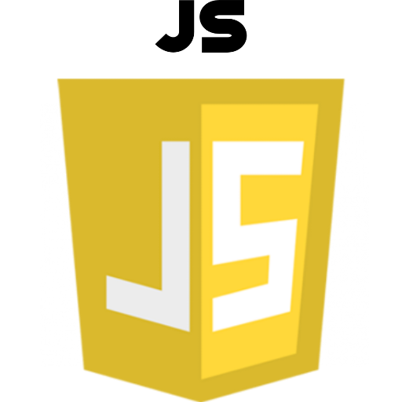

Aplikasi web adalah jenis aplikasi yang menggunakan arsitektur client server. Sesuai dengan namanya client server berarti adanya pembagian kerja pengolahan data antara klien dan server. Secara singkat, jaringan client server adalah jaringan dimana computer klien bertugas melakukan permintaan data dan server bertugas melayani permintaan tersebut.
Pemrograman Web diambil dari 2 suku kata yaitu pemrograman dan Web. Pemrograman yang dalam bahasa English adalah programming dan diartikan proses, cara, perbuatan program.
Definisi Web : Jaringan komputer yang terdiri dari kumpulan situs internet yang menawarkan teks dan grafik serta suara dan juga sumber daya animasi melalui protokol transfer hypertext.
STRUKTUR WEB
PENGGAYA WEB
PROGRAM WEB
